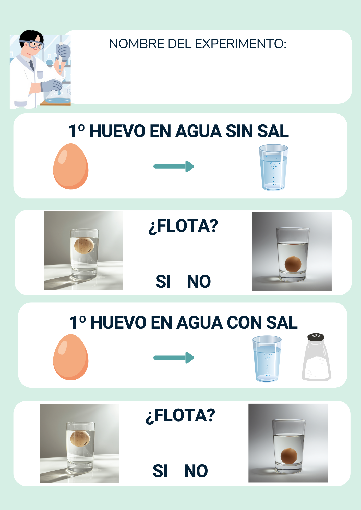

Experimentos marinos
Como un buen científico te propongo realizar dos experimentos:
1. El huevo flotante. ¿Por qué flotará el huevo en agua salada? Descúbrelo.
El huevo que flota (Experimentos Caseros)
ExpCaserosMix
Realiza el experimento y anota los datos de tu investigación en esta ficha:

2. Te propongo otro experimento: hacer el mar en una botella. Es fácil y verás qué chulo te queda.
EL MAR EN UNA BOTELLA
La Salle La Laguna
¡Comparte fotos de tu experimento con los compis!